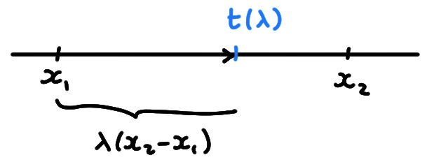
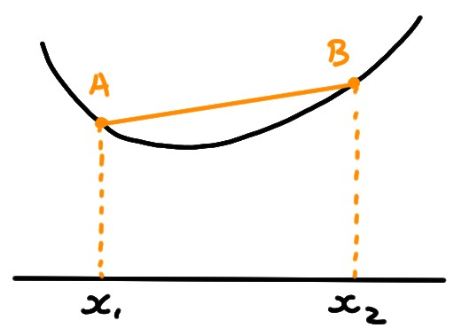
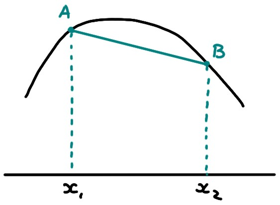
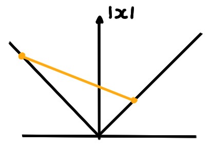
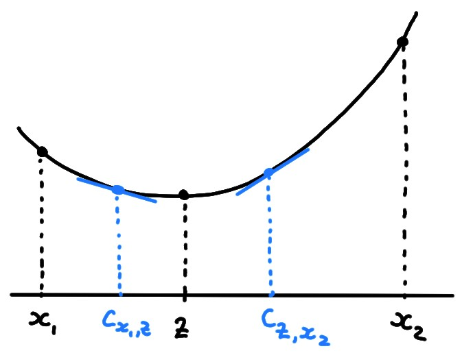
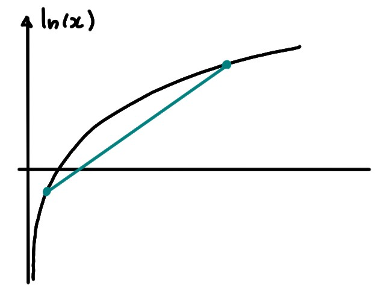
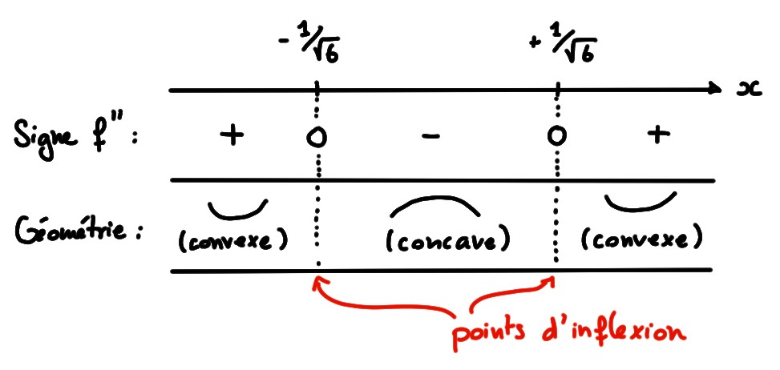
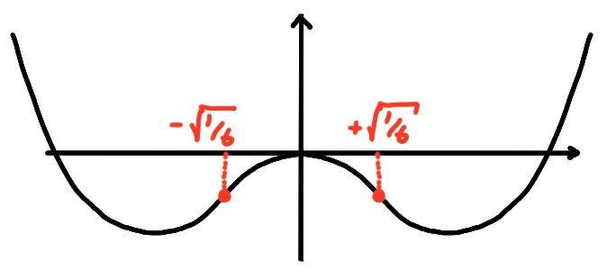

Soient \(x_1\lt x_2\) deux réels. On peut paramétrer toutes les positions
intermédiaires entre \(x_1\) et \(x_2\) à l'aide d'un paramètre \(\lambda\in
[0,1]\), en introduisant la fonction
\[
\lambda\mapsto t(\lambda)=x_1+\lambda(x_2-x_1)=(1-\lambda)x_1+\lambda x_2\,.
\]

On a \(t(0)=x_1\), \(t(1)=x_2\); toute autre \(0\lt \lambda\lt
1\) représente un point \(x_1\lt t(\lambda)\lt x_2\).
Soit \(I\) un intervalle, borné ou pas, et \(f:I\to \mathbb{R}\).
\(f\) est convexe si pour toute paire \(x_1,x_2\in I\),
\[ f((1-\lambda)x_1+\lambda x_2)\leqslant (1-\lambda) f(x_1)+\lambda f(x_2)\,.\]
\(f\) est concave si \(-f\) est convexe, c'est-à-dire si
pour toute paire \(x_1,x_2\in I\),
\[f((1-\lambda)x_1+\lambda x_2)\geqslant (1-\lambda) f(x_1)+\lambda f(x_2)\,.\]
Géométriquement, la fonction est convexe si tout segment reliant deux
points quelconques de son graphe est toujours au-dessus du graphe,

et elle est concave si tout segment reliant deux
points quelconques de son graphe est toujours au-dessous du graphe:

Soit \(I\) un intervalle. Alors \(f:I\to \mathbb{R}\) est concave si et seulement si
\(-f\) est convexe.
\(f(x)=|x|\) est convexe puisque, par l'inégalité triangulaire,
\[\begin{aligned}
f\bigl((1-\lambda)x_1+\lambda x_2\bigr)
&=\bigl|(1-\lambda)x_1+\lambda x_2\bigr|\\
&\leqslant \bigl|(1-\lambda)x_1\bigr|+\bigl|\lambda x_2\bigr|\\
&=(1-\lambda)|x_1|+\lambda |x_2|\\
&=(1-\lambda)f(x_1)+\lambda f(x_2)\,.
\end{aligned}\]

\(f(x)=x^2\) est convexe (sur tout \(\mathbb{R}\)). En effet,
\[\begin{aligned}
f((1-\lambda)x_1+\lambda x_2)
&-(1-\lambda) f(x_1)-\lambda f(x_2)\\
&=\bigl((1-\lambda)x_1+\lambda x_2\bigr)^2-(1-\lambda)x_1^2-\lambda x_2^2\\
&=-\lambda(1-\lambda)(x_1-x_2)^2\\
&\leqslant 0\,.
\end{aligned}\]
Ces exemples montrent que la convexité/concavité d'une fonction n'est pas facile
à obtenir analytiquement.
Voyons maintenant comment la notion de dérivée permet de se tirer
d'affaire, au moins dans les cas où la fonction est suffisamment lisse.
Convexité et dérivée seconde
Soit \(I\) un intervalle ouvert, \(f:I\to \mathbb{R}\) deux fois dérivable sur \(I\)
(\(f\) est dérivable, et \(f'\) est aussi dérivable sur \(I\)).
Si \(f''(x)\geqslant 0\) pour tout \(x\in I\), alors \(f\) est convexe sur
\(I\).
Si \(f''(x)\leqslant 0\) pour tout \(x\in I\), alors \(f\) est concave sur
\(I\).
Il suffit de démontrer la première implication.
Remarquons d'abord que comme \(f''\geqslant 0\), \(f'\) est croissante sur \(I\).
Soient \(x_1\lt x_2\) dans \(I\). Fixons \(\lambda \in ]0,1[\) et
posons \(z:= (1-\lambda)x_1+\lambda x_2\).

On applique deux fois le théorème des accroissements finis:
\[\begin{aligned}
\text{TAF sur }[x_1,z]&:\quad f(z)-f(x_1)=f'(c_{x_1,z})(z-x_1)\,,\\
\text{TAF sur }[z,x_2]&:\quad f(x_2)-f(z)=f'(c_{z,x_2})(x_2-z)\,.
\end{aligned}\]
Remarquons que comme \(c_{x_1,z}\lt c_{z,x_2}\), et puisque \(f'\) est
croissante,
\[
f'(c_{x_1,z})\leqslant f'(c_{z,x_2})
\]
Donc
\[\begin{aligned}
f(z)-f(x_1)&\leqslant f'(c_{z,x_2})(z-x_1)\quad |\cdot(1-\lambda)\\
f(x_2)-f(z)&= f'(c_{z,x_2})(x_2-z)\quad |\cdot\lambda
\end{aligned}\]
En soustrayant les deux inégalités (multipliées par \(1-\lambda\) et
\(\lambda\)), on trouve
\[\begin{gathered}
f(z)-\bigl\{
(1-\lambda)f(x_1)+\lambda f(x_2)
\bigr\}\leqslant\\
f'(c_{z,x_2})\bigl(
\underbrace{(1-\lambda)(z-x_1)-\lambda(x_2-z)}_{=0}\bigr)=0\,.
\end{gathered}\]
Reprenons l'exemple précédent:
\(f(x)=x^2\). Comme \(f''(x)=2\gt 0\), on conclut par le théorème
que \(f\) est convexe sur \(\mathbb{R}\).
Considérons maintenant
\(f(x)=\ln(x)\), sur \(\mathbb{R}_+^*\). Comme
\(f''(x)=-\frac{1}{x^2}\lt 0\) pour tout \(x\in \mathbb{R}_+^*\), le théorème entraîne
que le logarithme est concave:

Considérons le polynôme
\(f(x)=x^4-x^2\), et étudions le signe de sa deuxième dérivée, donnée par
\(f''(x)=2(6x^2-1)\):

On en déduit que:
\(f\) est convexe sur \(]-\infty,-\sqrt{1/6}[\),
\(f\) est concave sur \(]-\sqrt{1/6},+\sqrt{1/6}[\),
\(f\) est convexe sur \(]+\sqrt{1/6},+\infty[\).
Les points \((\pm\sqrt{1/6},f(\pm \sqrt{1/6}))\) sont
des points d'inflexion:

Soit \(I\) un intervalle borné et ouvert, \(f:I\to \mathbb{R}\).
Vrai ou faux?
[ ] Si \(f\) n'est pas dérivable, alors elle n'est pas convexe.
[ ] Si \(f\) n'est pas continûment dérivable, alors elle n'est pas convexe.
[ ] Si \(f\) n'est pas deux fois dérivable, alors elle n'est pas convexe.
[ ] Si \(f\) n'est pas deux fois continûment
dérivable, alors elle n'est pas convexe.
[ ] Si \(f''(x)=0\) pour tout \(x\in I\),
alors le graphe de \(f\) est une droite.
[ ] Si \(f\) est convexe, alors elle atteint son minimum.
[ ] Si \(f\) est convexe, alors elle est majorée.
Soit \(f:\mathbb{R}\to \mathbb{R}\) convexe.
Vrai ou faux?
[ ] \(f\) atteint son minimum.
[ ] Il n'existe aucun intervalle \([a,b]\)
sur lequel \(f\) est de la forme \(f(x)=mx+h\).
[ ] Si \(\lim_{x\to-\infty}f(x)=
\lim_{x\to+\infty}f(x)=+\infty\), alors
il existe \(\beta\in \mathbb{R}\) tel que \(f\)
est décroissante sur \(]-\infty,\beta]\),
croissante sur \([\beta,+\infty[\).
[ ] Pour tout \(a\lt b\), \(\sup_{[a,b]}f\) est fini.
[ ] Si \(f\) est bornée, alors c'est une constante.